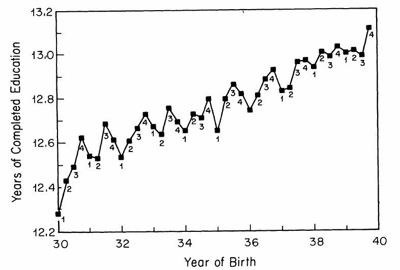
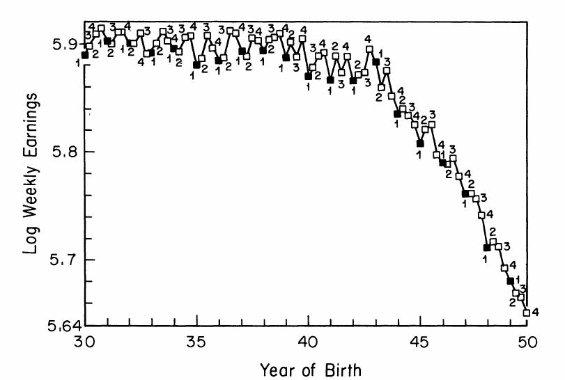

flowchart TD
X["X: EDUC"] -->|Causal effect| Y["Y: LWKLYWGE"]
U["U: Ability"] --> X
U --> Y
Instrumental Variable Method
A Short Introduction
Subham Kailthya ![]()
2026-06-04
Discussion of IV
Setting
- Suppose \(\beta_1\) is the true causal effect of \(X\) on \(Y\) in the linear regression: \[ Y_{i} = \beta_0 + \beta_1 X_{i} + u_{i}, \quad i=1, \ldots, N \]
- For all \(\hat{\beta}_{i}^{OLS}\) to be consistent, we need: \[ \mathbb{E}[u_i|X_i] = 0 \] i.e. \(X_i\) is exogenous and contains no information on \(u_i\).
- When \(\mathbb{E}[u_i|X_i] \ne 0\), \(X_i\) is endogenous and \(\hat{\beta}_{i}^{OLS}\) becomes inconsistent (invalid even in large samples).
- Example: The effect of
EDUConLWKLYWGE(Angrist and Krueger 1991), where \(\text{Cov(X, U)}>0\)
Example
Quiz: Threats to Internal Validity
What are potential threats to internal validity?
- Omitted variables bias
- Measurement error in an independent variable
- Sample selection bias
- Simultaneity
- All of the above
IV: Basic Idea
- For the equation: \[
Y_{i} = \beta_0 + \beta_1 X_{i} + u_{i}
\] IVs decompose \(X\) into two parts that are uncorrelated: \[
X_{i} = \gamma_0 + \gamma_1 Z_{i} + v_{i}
\]
- \(\text{Cov}(Z, u) = 0\): the part uncorrelated with \(u\)
- \(\text{Cov}(v, u) \ne 0\): the part correlated with \(u\) and the source of endogeneity
- with \(\text{Cov}(Z,v) = 0\)
- \(Z_{i}\) is an instrumental variable
Example: AK (1991)
\(\text{Cov}(X, U) \ne 0\)
flowchart TD
Z["Z: Instrument (QOB)"] -->|Relevance| X["X: EDUC"]
X -->|Causal effect| Y["Y: LWKLYWGE"]
U["U: Ability"] --> X
U --> Y
Z -.-o|No direct effect - Exclusion| Y
Conditions for a Valid Instrument
A valid instrumental variable must satisfy two conditions:
- Instrument relevance: \(\text{Cov}(Z_{i}, X_{i}) \ne 0\)
- We observe both \(X\) and \(Z\) and can test this assumption by regressing: \[ X_{i} = \gamma_0 + \gamma_1 Z_{i} + v_{i} \]
- If \(\gamma_1 \ne 0\) \(\implies\) instrument is relevant
- Instrument exogeneity: \(\text{Cov}(Z_{i}, u_{i}) = 0\)
- \(u_{i}\) is unobservable, so we cannot test this assumption
- Must defend this assumption by explaining why \(Z\) and \(u\) are unlikely to be correlated
IV Regression with Continuous \(Z\)
Consider the same model: \[ Y_{i} = \beta_0 + \beta_1 X_{i} + u_{i} \]
- \(Z\) is continuous
- To capture the indirect effect of \(Z\): \[ \begin{aligned} \text{Cov}(Y_{i},Z_{i}) &= \text{Cov}(\beta_0 + \beta_1 X_{i} + u, Z_{i}) \\ &= \beta_1 \text{Cov}(X_{i}, Z_{i}) \quad \text{since } \text{Cov}(Z_{i}, u_{i}) = 0 \end{aligned} \]
- Rearranging, we get the instrumental variable estimator: \[ \begin{aligned} \beta_{1}^{IV} &= \frac{\text{Cov}(Y_{i},Z_{i})}{\text{Cov}(X_{i}, Z_{i})}\\ & =\frac{s_{YZ}}{s_{ZX}} \end{aligned} \]
Large Sample Properties of \(\beta_{1}^{IV}\)
Consistency
Due to LLN, \(s_{YZ} \xrightarrow{p} \text{Cov}(Z_i, Y_i)\) and \(s_{XZ} \xrightarrow{p} \text{Cov}(Z_i, X_i)\).
It follows: \[ \beta_{1}^{IV} = \frac{s_{YZ}}{s_{ZX}} \xrightarrow{p} = \frac{\text{Cov}(Z_i, Y_i)}{\text{Cov}(Z_i, X_i)} = \beta_1 \]
\(\beta_{1}^{IV}\) is consistent
Normality
Due to CLT, \[ \beta_{1}^{IV} \stackrel{a}{\sim} N(\beta_1, \sigma^{2}_{\hat{\beta}_{1}^{TSLS}}) \quad \text{ where,} \] \[ \sigma^{2}_{\hat{\beta}_{1}^{TSLS}} = \frac{1}{n}\frac{\mathbb{V}[(Z_i - \mu_Z)u_i]}{[\text{Cov}(Z_{i}, X_{i})]^2} \]
Two Stage Least Squares (TSLS) Estimator
- Suppose we have an instrument \(Z\) that satisfies both instrument relevance and exogeneity conditions.
- We can estimate \(\beta_1\) using a two-step procedure:
- First stage regression: Regress \(X\) on \(Z\) (reduced form equation for \(X\)): \[ X_{i} = \gamma_0 + \gamma_1 Z_{i} + v_{i} \] Apply OLS and obtain predicted values \(\hat{X}_{i}\)
- Second Stage regression: Regress \(Y_{i}\) on \(\hat{X}_{i}\) \[ Y_{i} = \beta_0 + \beta_1 \hat{X}_{i} + u_{i} \] The TSLS estimators \(\beta_{0}^{TSLS}\) and \(\beta_{1}^{TSLS}\) are obtained from the second stage regression.
Angrist and Krueger (1991)
“The experiment stems from the fact that children born in different months of the year start school at different ages, while compulsory schooling laws generally require students to remain in school until their sixteenth or seventeenth birthday”


Angrist and Krueger (1991)
# Angrist and Krueger (1991) - Table IV
# load packages and data --------------------
library("dplyr")
library("janitor")
library("haven")
library("modelsummary")
library("ivreg")
ak91 <- read_dta(paste0(path, "/ak91.dta"))
# clean data and create variables ------------------------
ak91 <- ak91 %>% clean_names()
yr_v <- grep("^yr", names(ak91), value = TRUE)
yr_v <- yr_v[yr_v %in% "yr9" == FALSE]
qtr1_v <- grep("^qtr1", names(ak91), value = TRUE)
qtr1_v <- qtr1_v[qtr1_v %in% "qtr1" == FALSE]
qtr2_v <- grep("^qtr2", names(ak91), value = TRUE)
qtr2_v <- qtr2_v[qtr2_v %in% "qtr2" == FALSE]
qtr3_v <- grep("^qtr3", names(ak91), value = TRUE)
qtr3_v <- qtr3_v[qtr3_v %in% "qtr3" == FALSE]
X_exog <- c(
"race",
"married",
"smsa",
"neweng",
"midatl",
"enocent",
"wnocent",
"soatl",
"esocent",
"wsocent",
"mt",
"ageq",
"ageqsq"
)
X_endog <- "educ"
Z_inst <- c(yr_v, qtr1_v, qtr2_v, qtr3_v)
# OLS model
ols_fml <- as.formula(
paste(
"lwklywge ~",
paste(c(X_endog, X_exog, yr_v), collapse = " + ")
)
)
ols_model <- lm(ols_fml, data = ak91)
# IV model
iv_fml <- as.formula(
paste(
"lwklywge ~",
paste(c(X_exog, yr_v), collapse = " + "),
"|",
X_endog,
"|",
paste(Z_inst, collapse = " + ")
)
)
iv_model <- ivreg(iv_fml, data = ak91)
m_list <- list(
"OLS" = ols_model,
"IV" = iv_model
)
msummary(m_list)Dependent variable: log weekly wages
| OLS | IV | |
|---|---|---|
| Education | 0.070*** | 0.103** |
| (0.000) | (0.033) | |
| Observations | 247199 | 247199 |
| R² | 0.230 | 0.204 |
|
||
\(\beta_{1}^{TSLS} > \beta_{1}^{OLS}\) : school “completion” effect due to compulsory schooling.
Tutorial
References
Angrist, Joshua D, and Alan B Krueger. 1991. “Does Compulsory School Attendance Affect Schooling and Earnings?” The Quarterly Journal of Economics 106 (4): 979–1014.